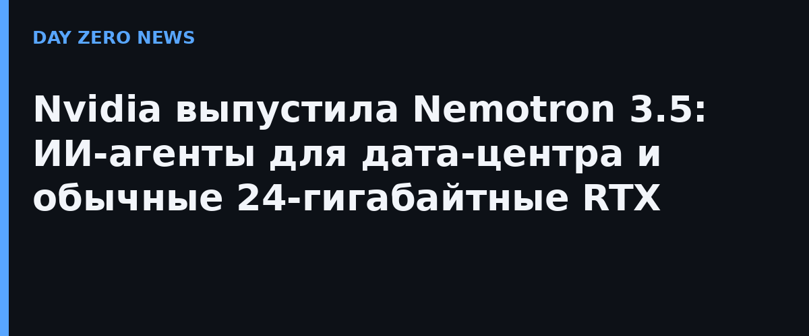

Nvidia представила Nemotron 3.5 Super VL — открытую мультимодальную модель на 120 млрд параметров, рассчитанную на постоянно включённых агентов. Она читает PDF, разбирает таблицы и графики, вызывает внешние инструменты и ведёт многошаговые рабочие процессы. По заявлениям компании, точность у неё сопоставима с самой большой рассуждающей модели Nvidia примерно при пятой части параметров, а пропускная способность — до 5 раз выше ближайших конкурентов в своём классе. Модель уже доступна на Hugging Face, OpenRouter, ModelScope и платформе NIM, и её можно дообучать на собственных данных.
Главная новость для владельцев десктопов — Nemotron 3.5 Bolt 74B-A9B: модель смесь-экспертов на 74 млрд параметров с нативным 2-битным квантованием, которая укладывается в 24 ГБ памяти и активирует около 9 млрд параметров за раз. Она рассчитана на локальные исследования, веб-серфинг, написание и отладку кода на RTX и DGX Spark — без отправки данных в облако, с поддержкой Ollama, LM Studio, llama.cpp и vLLM. Третья модель, Bolt E4B объёмом 4 ГБ для голосовых ассистентов и встраиваемых интерфейсов, обещана 23 октября.
Nvidia делает ставку на то, что открытые модели тянут покупателей железа: Super VL уже дообучивают Scale AI (агент кредитного анализа для Skydance, due diligence для EY), AI21 и CrowdStrike (агентная защита в кибербезопасности), Perplexity, Atlassian и Salesforce. Приём понятен: организации размещают агента на своей инфраструктуре и сами следят, что он строит, — в отличие от закрытых фронтир-моделей.
Локальным агентам по-прежнему нужно недешёвое железо: 24-гигабайтный порог — это верхний сегмент RTX и рабочие станции. Но сама линейка закрывает теперь весь диапазон — от корпоративных серверов до карманных Jetson, и это первый случай, когда один вендор предлагает открытую модель под каждый уровень размещения агента.